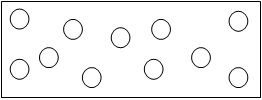

[Editorial Note: Many of the articles on this website were taken from an old blog that was authored by Hamza Andreas Tzortzis. Some of the written work are compilations of various thinkers and philosophers such as the Philosopher William Lane Craig, Dr. Jafaar Idris and others. In the next few months the articles will be updated and changed to move away from compilations and a blog style, to a more academic tone with sound referencing. In this particular article some of the references were taken from secondary work by Professor William Craig and Professor Polkinghorne, you can access their work online. Over the next couple of weeks the articles will be updated to be in line with best practice and academia.]
[hr]
“No question is more sublime than why there is a universe: why there is anything rather than nothing.”[1]
When we reflect upon our own existence we will come to the realisation, that at some point in time, we began to exist. Since we were once non-existent and are now in existence, it follows that we must have had a beginning. In light of this, the Qur’an raises some profound questions: were we created by nothing? Did we create ourselves? Or did we create the universe?
“Or were they created by nothing? Or were they the creators (of themselves)? Or did they create heavens and earth? Rather, they are not certain.” Quran 52:35-36
These questions can be addressed to the existence of everything temporal, in other words the entire universe. Therefore, the exegetical implications of these verses can be logically formulated in the following way:
Things that began to exist were either:-
1. Created or brought into being from nothing
2. Self caused or self created
3. Created or brought into being by something else that began to exist
4. Created or brought into being by a non-created or un-caused entity
Before we proceed, the first presupposition has to be subtantiated, as it forms the basis for the Qur’an’s argument for the existence of God. This first assumption is that the universe began to exist.
Did the universe begin to exist?
To substantiate the view that the universe began to exist we can bring into our discussion a plethora of philosophical and inductive arguments:
1. The second law of thermodynamics
2. The absurdity of an infinite history of past events
3. Astrophysical evidence
1. The second law of thermodynamics
The concept of entropy was introduced to explain the direction of various processes that occur in the natural world. Entropy is a measure of how evenly energy is distributed in a system. For example, heat always flows from a body of a higher temperature or energy (low entropy) to one of a lower temperature or energy (high entropy). Take the following illustration of a container with gas,

when the partition is removed, the gas in one end of the container will spread to the whole of the container, going from a state of low entropy (higher temperature or energy) to high entropy (lower temperature or energy).
Hence, according to the second law of thermodynamics, processes in a closed system tend towards higher entropy, as their energy is being used.
Applying the second law of thermodynamics to the universe we will conclude that it must have began to exist. Since the universe is a closed system, with enough time the universe will suffer a heat death or thermodynamic equilibrium. When systems are in thermodynamic equilibrium, they cannot transfer energy. This is because entropy can only increase over time. Therefore, as the universe continues to expand it will eventually become cold and dead. However this raises a question, if the universe never began to exist it would imply that the universe has existed for an infinite amount of time. If this is true then why isn’t the universe already in a state of heat death? This strongly suggests that the universe must have had a beginning, because if it didn’t it would imply that it has existed for an infinite amount of time, which would mean that it should already have suffered a heat death. Since it hasn’t suffered a heat death, it strongly indicates that the universe is finite, meaning it began to exist.
2. The absurdity of an infinite history of past events
Some philosophers such as Bertrand Russell argued that the universe is eternal, meaning it has no beginning and it will never end. However if we think about this we will conclude that this position is irrational. If the universe never had a beginning it means there must be an infinite history of past events. Yet does an actual infinite exist in the real world? Is it possible?
The concept of the actual infinite cannot be exported into the real world, because it leads to contradictions and doesn’t make sense. Let’s take the following examples to illustrate this point:
1. Say you have an infinite number of balls, if I take 2 balls away, how many do you have left? Infinity. Does that make sense? Well, there should be two less than infinity, and if there is, then we should be able to count how many balls you have. But this is impossible, because the infinite is just an idea and doesn’t exist in the real world. In light of this fact the famous German mathematician David Hilbert said,
“The infinite is nowhere to be found in reality. It neither exists in nature nor provides a legitimate basis for rational thought…the role that remains for the infinite to play is solely that of an idea.”[2]
2. Imagine you are a soldier ready to fire a gun, but before you shoot you have to ask permission for the soldier behind you, but he has to do the same, and it goes on for infinity. Will you ever shoot? No you wouldn’t. This highlights, the absurdity of an infinite regress and this applies to events to. Therefore, there cannot be an infinite history of past events.
3. Take the distance between two points, one may argue that you can subdivide the distance into infinite parts, but you will always be subdividing and never actually reach the ‘infinitieth’ part! So in reality the infinite is potential and can never be actualised. Similarly the ancient Greek Philosopher Aristotle explained,
“…the infinite is potential, never actual: the number of parts that can be taken always surpasses any assigned number.”[3]
So if we refer back to an infinite history of past events we can conclude, since events are not just ideas they are real, the number of past events cannot be infinite. Therefore the universe must be finite, in other words the cosmos had a beginning.
3. Astrophysical evidence
The ‘Big Bang’ is the prevailing theory in cosmology. It was first formulated by the aid of some observations made by an American Astronomer called Edwin Hubble. While Hubble was trying to understand the size of the universe, he observed immensely luminous stars called Cepheid Variables and noticed something peculiar. He observed that some of these stars were further away than initially anticipated, and that their colour was slightly changed, shifting towards red, something now known as red-shift. From Hubble’s observations we were able conclude that everything seems to be moving away from each other, in other words the universe is effectively expanding. As time moves on the universe continues to expand, but if time is reversed, the theory is that everything starts to coalesce and come together. Coupled with the discovery of cosmic microwave background radiation, which is the radiation uniformly filling the observable universe, the idea of the ‘Big Bang’ was born. In other words the universe began at a cataclysmic event which created space-time and all matter in the universe. The physicist P. C. W. Davies explains,
“If we extrapolate this prediction to its extreme, we reach a point when all distances in the universe have shrunk to zero. An initial cosmological singularity therefore forms a past temporal extremity to the universe. We cannot continue physical reasoning, or even the concept of spacetime, through such an extremity. For this reason most cosmologists think of the initial singularity as the beginning of the universe. On this view the big bang represents the creation event; the creation not only of all the matter and energy in the universe, but also of spacetime itself.”[4]
Although our understanding of what happened 10-43 seconds after the ‘Big Bang’ is highly speculative, astrophysicists now concede little doubt that this universe in which we live is the aftermath of the emergence and expansion of space-time, which occurred approximately 14 billion years ago. John Gribbin, an astrophysicist at Cambridge University, summarises the importance of ‘Big Bang’ cosmology,
“…the discovery of the century, in cosmology at least, was without doubt the dramatic discovery made by Hubble, and confirmed by Einstein’s equations, that the Universe is not eternal, static, and unchanging.”[5]
Thus the ‘Big Bang’ model describes our universe as having a beginning a finite time ago. As Alex Vilenkin, one of the world’s leading theoretical cosmologists, writes,
“It is said that an argument is what convinces reasonable men and a proof is what it takes to convince even an unreasonable man. With the proof now in place, cosmologists can no longer hide behind the possibility of a past-eternal universe. There is no escape, they have to face the problem of a cosmic beginning.”[6]
Other models have been proposed to try and explain away the obvious metaphysical questions that arise from a finite universe, for instance P.C.W. Davies questions,
“What caused the big bang? . . . One might consider some supernatural force, some agency beyond space and time as being responsible for the big bang, or one might prefer to regard the big bang as an event without a cause. It seems to me that we don’t have too much choice. Either…something outside of the physical world…or…an event without a cause.”[7]
These models include the oscillating and vacuum fluctuation models. These models however still have principles that necessitate a beginning to the universe, in other words they are non-infinitely extendable into the past. Take the oscillating model as an example, this model maintains that if the gravitational pull of the mass of the universe was able to surmount the force of its expansion, then the expansion could be changed into a cosmic contraction or ‘Big Crunch’, and then into a new expansion, with the process continuing ad infinitum. However, there are a few issues with this model,
1. Firstly there is nothing available in modern physics that would allow a universe that is collapsing to spring back into a new expanding universe.
2. Secondly the mean mass density of the universe, derived from observational evidence, has shown that it is not enough to develop the required gravitational force to stop and reverse the expansion of the universe.
3. Thirdly, the second law of thermodynamics (as discussed above) implies the finitude of the universe. According to the oscillation model, the entropy is conserved from cycle to cycle of the various oscillations of expansion, crunch and expansion. This has the effect of generating larger and longer oscillations. Therefore the thermodynamic property of this model implies a beginning, as the universe that we exist in has not suffered a heat death, or thermodynamic equilibrium.
Since we have presented good evidence that the universe began to exist. We can now address the logically possible explanations the Qur’an presents as rationalisations of the origins of the universe.
Created or brought into being from nothing
We know the universe couldn’t have come out of nothing, because out of nothing, nothing comes! This is an undeniable philosophical principle, as P. J. Zwart in his publication About Time explains,
“If there is anything we find inconceivable it is that something could arise from nothing.”[8]
A significant point to raise here is that nothingness should not be misconstrued as the nothingness that some physicists talk about. The term nothingness in this context refers to the absence of anything physical, in other words there is no pre-existing ‘stuff’. In light of the beginning of the universe, there was absolutely nothing before it began to exist, which is why physicists have explained the universe as having a space-time boundary.
However, nothingness as defined by some physicists relates to the quantum vacuum. This is misleading because the quantum is something. In quantum theory the vacuum is a field of energy pervading the whole of the universe. In the word’s of John Polkinghorne, a philosopher of science, the quantum vacuum,
“…is not ‘nothing’; it is a structured and highly active entity.”[9]
So, in context of some of the physicists’ definition, the universe could not have come from absolutely nothing, as the quantum vacuum is something. It is a sea of fluctuating energy, which is still part of the cosmos and it did not pre-exist the universe. This point leads us nicely to the next possible explanation.
Self caused or self created
Philosophically, the universe couldn’t have created itself because that would imply a paradox. It would mean that something can exist and not exist at the same time. The logical ends of this explanation are tantamount to saying that your mother gave birth to herself!
Recently, the world renowned physicist, Stephen Hawking in his new book The Grand Design argues that the universe did self create due to the law of gravity,
“Because there is a law like gravity, the universe can and will create itself from nothing…”[10]
But his view on nothing, as previously mentioned, is not really nothingness but is space filled with the quantum vacuum, which is part of the universe. In essence Hawking is telling us that the universe can create itself, but it has to already exist for it to do that!
Concerning the law of gravity, well that is just a mathematical equation that describes nature. This law is part of the universe, which can also be described as a force of attraction between material objects. Therefore, how can this force exist before matter, in other words the universe?
To assert that the universe created itself would be absurd and self refuting, because in order for something to create itself it would need to exist before it existed!
Created or brought into being by something else that began to exist
This is not an adequate explanation for the origins of the universe. The universe could not have owed its existence to another state of temporal physical existence. To maintain such an explanation would be equivalent of expanding the boundaries of the universe, as all things which have a temporal beginning exist within the universe. Also, if temporal physical existence owes itself to another temporal physical existence ad infinitum, it doesn’t explain anything. Rather it highlights the absurdity of an infinite regress, and that there has to be a beginning to the temporal physical states, which logically must be a non-physical state.
Take the following example into consideration. If the universe, U1, followed another temporal cause U2, and U2 followed another temporal cause U3, and this went on ad infinitum we wouldn’t have the universe U1 in the first place. Think about it this way, when does U1 come into being? Only after U2 has come into being. When does U2 come into being? Only after U3 has come into being. This same problem will continue even if we go to infinity. If U1 depended on its coming into being on a chain of infinite temporal causes, U1 would never exist. As the Islamic Philosopher and Scholar Dr. Jaafar Idris writes,
“There would be no series of actual causes, but only a series of non-existents, as Ibn Taymiyyah explained. The fact, however, is that there are existents around us; therefore, their ultimate cause must be something other than temporal causes.”[11]
Created or brought into being by a non-created or un-caused entity
Since something cannot come from nothing, and self creation is absurd, including the unreasonableness of the aforementioned explanation, then the universe being created or brought into existence by an uncaused entity is the best explanation. This concept is intuitive but also agrees with reality: whatever begins to exist has a cause or a creator.
This cause or creator must be uncaused due to the absurdity of an infinite regress, in other words an indefinite chain of causes. To illustrate this better, if the cause of the universe had a cause and that cause had a cause ad infinitum, then there wouldn’t be a universe to talk about in the first place (something we have already discussed above). For example, imagine if a Stock Trader on a trading floor at the Stock Exchange was not able to buy or sell his stocks or bonds before asking permission from the investor, and then this investor had to check with his, and this went on forever, would the Stock Trader every buy or sell his stocks or bonds? The answer is no. In similar light if we apply this to the universe we would have to posit an uncaused cause due to this rational necessity. The Qur’an confirms the uncreatedness of the creator, God,
“He neither begets nor is born.” Qur’an 112:3
The cause or creator for the universe must be a single cause for several reasons. An attractive argument to substantiate this claim includes the use of the rational principle called Occam’s razor. In philosophical terms the principle enjoins that we do not multiply entities beyond necessity. What this basically means is that we should stick to explanations that do not create more questions than it answers. In the context of the cause for the universe we have no evidence to claim multiplicity, in other words more than one. The Qur’an affirms the Oneness of the creator,
“Say: He is God, [who is] One.” Qur’an 112:1
However some philosophers and scientists claim: why doesn’t the cause be the universe itself? Why can’t the cause stop at the universe? Well, the problem with these claims is that they would imply that the universe created itself, which we have already discussed, is absurd. Additionally, we have good reasons to postulate a cause for the universe because the universe began to exist, and what begins to exist has a cause.
Our argument thus far allows us to conclude that this cause or creator must be non contingent meaning that its existence is dependent on nothing but itself. If it were contingent it would be one more effect in the chain of causes. The Qur’an verifies this,
“God is Independent of (all) creatures.” Qur’an 3:97
The cause or creator must also be transcendent, this means that the cause of the universe must exist outside of and apart from the universe. Since this being exists apart from the universe it must be non-physical or immaterial, if it was material then it would be part of the universe. This is confirmed in the Qur’an,
“There is nothing like unto Him, and He is the Hearing, the Seeing” Qur’an 42:11
This cause must have the power to create the universe, without this ability nothing could be created. The Qur’an testifies to God’s power,
“Certainly, God has power over all things.” Qur’an 2:20
This cause must have a will, because it wouldn’t be able to create the universe without one. What this means is that it must have a will so the power to create could be acted on. The Qur’an refers to God as having a will in many places, for instance,
“And God guides whom He wills to a straight path.” Qur’an 2:213
In summary, we have concluded what the Qur’an concluded over 1400 years ago, that a creator for the universe exists, that is one, has a will, is powerful, uncaused, immaterial and eternal.
Quantum Physics Undermines the Argument
A common contention to the central argument made in this essay is that the assumption – whatever begins to exist has a cause – is false. This is due to the apparent observations in the quantum vacuum that sub-atomic events behave spontaneously without any causes. In light of this common contention there are some good objections we can raise:
1. Firstly, the view that some events just happen, also known as indeterminism, for no reason at all is impossible to prove conclusively. Our inability to identify a cause does not necessarily mean that there is no cause.
2. Secondly, there are deterministic perspectives adopted by physicists to explain these so-called spontaneous sub-atomic events. For instance in the 1950s David Bohm showed there was an alternative formulation of quantum theory that is fully deterministic in its basic structure. [12] Commenting on Bohm’s theory Polkinghorne explains,
“In Bohm’s theory there are particles which are as unproblematically objective and deterministic in their behaviour as Sir Isaac Newton himself might have wished them to be. However, there is also a hidden wave, encoding information about the whole environment. It is not itself directly observable, but it influences in a subtle and highly sensitive manner the motions of the particles in just such a way as to induce the experimentally observed probabilistic effects.”[13]
What this means is that the apparent indeterminism present at the quantum level can be explained deterministically by this hidden wave that produces observed indeterministic or probabilistic effects.
However, since these two interpretations of quantum theory are empirically equivalent the choice between them will not be based on a scientific decision but on a metaphysical one. This leads to the philosophical objection to this contention.
3. Thirdly, from a philosophical perspective it is extremely difficult for these physicists (who adopt an indeterministic explanation of sub-atomic events) to justify their conclusions. This is because without the concept of causality we will not have the mental framework to understand our observations and experiences. In philosophical terms causality is a priori, which means knowledge we have independent of any experience. We know causality is true because we bring it to all our experience, rather than our experience bringing it to us. It is like wearing yellow-tinted glasses, everything looks yellow not because of anything out there in the world, but because of the glasses through which we are looking at everything. Take the following example into consideration; imagine you are looking at the White House in Washington DC. Your eyes may wonder to the door, across the pillars, then to the roof and finally over to the front lawn. Now contrast this to another experience, you are on the river Thames in London and you see a boat floating past. What dictates the order in which you had these experiences? When you looked at the White House you had a choice to see the door first and then the pillars and so on. However, with the boat you had no choice as the front of the boat was the first to appear.
The point to take here is that you would not have been able to make the distinction that some experiences are ordered by yourself and others are ordered independently, unless we had the concept of causality. In absence of causality our experience would be very different from the way it is. It would be a single sequence of experiences only: one thing after another. So to accept that sub-atomic events do not correspond with causality would be tantamount of denying our own experience!
References
[1] Derek Parfit, “Why Anything? Why This?” London Review of Books 20/2 (January 22, 1998), page 24.
[2] David Hilbert. On the Infinite, in Philosophy of Mathematics, ed. with an Intro. by P. Benacerraf and H. Putnam. Prentice-Hall. 1964, page151.
[3] Aristotle, Physics 207b8 (available online here http://classics.mit.edu/Aristotle/physics.html)
[4] P. C. W. Davies, “Spacetime Singularities in Cosmology,” in The Study of Time III, ed. J. T. Fraser (Berlin: Springer Verlag, 1978), pages 78–79.
[5] John Gribbin, In the Beginning: The Birth of the Living Universe (Boston: Little, Brown and Company, 1993), page 19.
[6] Alex Vilenkin, Many Worlds in One: The Search for Other Universe. Hill and Wang. 2006, page 176.
[7] Paul Davies, “The Birth of the Cosmos,” in God, Cosmos, Nature and Creativity, ed. Jill Gready (Edinburgh: Scottish Academic Press, 1995), pages. 8-9.
[8] P. J. Zwart, About Time (Amsterdam and Oxford: North Holland Publishing Co., 1976), pages 117-19
[9] John Polkinghorne and Nicholas Beale. Questions of Truth. 2009, page 41
[10] Stephen Hawking and Leonard Mlodinow. The Grand Design. 2011, page 180.
[11] http://www.jaafaridris.com/English/Books/physicists.htm accessed 1 October 2011, 10:32AM.
[12] See D. Bohm and B. J. Hiley. The Undivided Universe. Routledge, 1993.
[13] John Polkinghorne. Science and Religion in Quest of Truth. SPCK. 2011, page 39